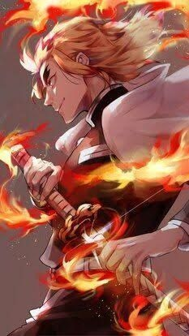
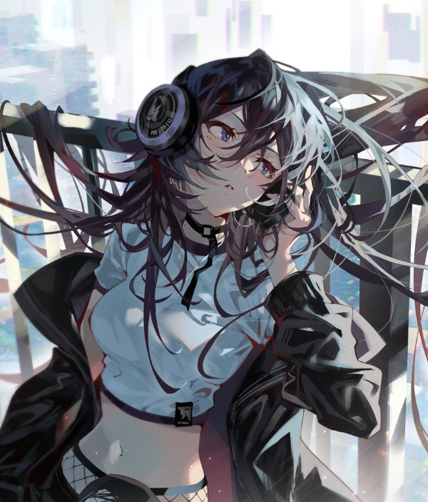
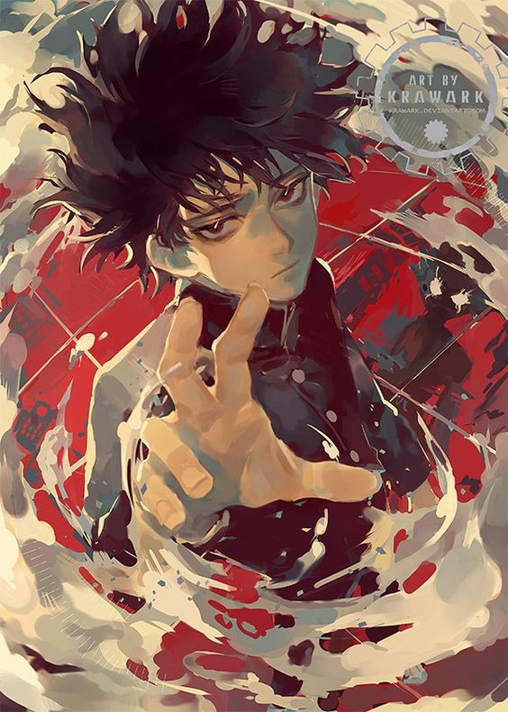
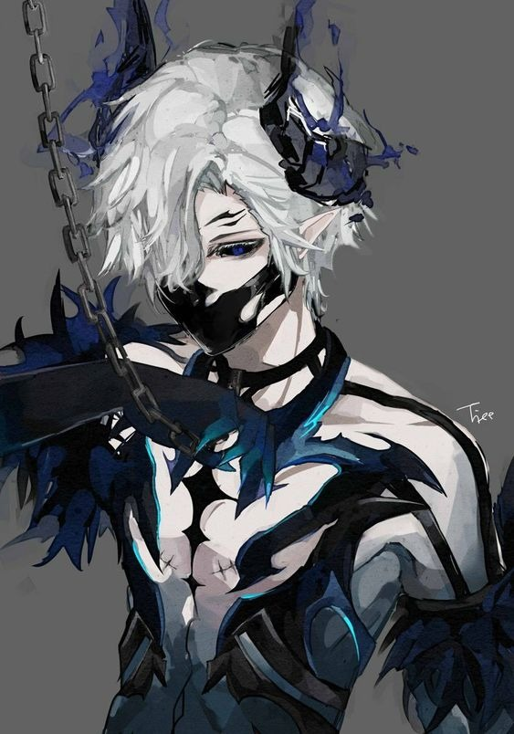

Primer pilar
El primer milagro y el líder de su grupo "Los Pilares" formado por 4 personas. cough ¿referencia? cough Su nombre se desconoce como el de los demás miembros. Su historia que se cuenta como una leyenda es la de cómo fue la primera persona en nacer con una resonancia de alma y además ser el más poderoso. Su gran corazón quiso guiar a los demás milagros a derrotar al señor oscuro para liberar a la humanidad. Desgraciadamente abandonó a su grupo en los últimos pisos, lo que hizo que el resto de miembros se fueran separando lentamente.
Segundo pilar
La segunda al mando de "Los Pilares". Siempre llevaba consigo cascos con silenciadores puestos porque le dolía la cabeza de tanto escuchar a las personas. Era la principal persona que daba órdenes de estrategia. Desgraciadamente desapareció antes de poder derrotar al primer señor oscuro. Nadie sabe qué pasó con ella.
Tercer pilar
La primera persona en completar la torre. Pocos son los documentos que hablan sobre esta él. Se dice que fue la primera en poder completar la torre y que pertenecía en un grupo de Los Pilares, donde habían 4 personas, contando a él mismo. Él era el tercer miembro del equipo. Su resonancia decía de poder mover objetos a su voluntad y hacerlos volar hacia las direcciones que él quería. Por lo que se sabe, siempre era muy callado pero su grupo siempre lo entendían.
Cuarto pilar
El último miembro de Los Pilares. Se unió cerca del piso 50 al grupo del primer milagro. Por lo que hay en los registros, juzgando su aspecto, tiene unos poderes que funcionan mejor en la oscuridad. ¿Probablemente sean de sombra? Fue el primero en desaparecer aunque, todos creen que simplemente se fue pues le aburría la idea de salvar a la humanidad.
